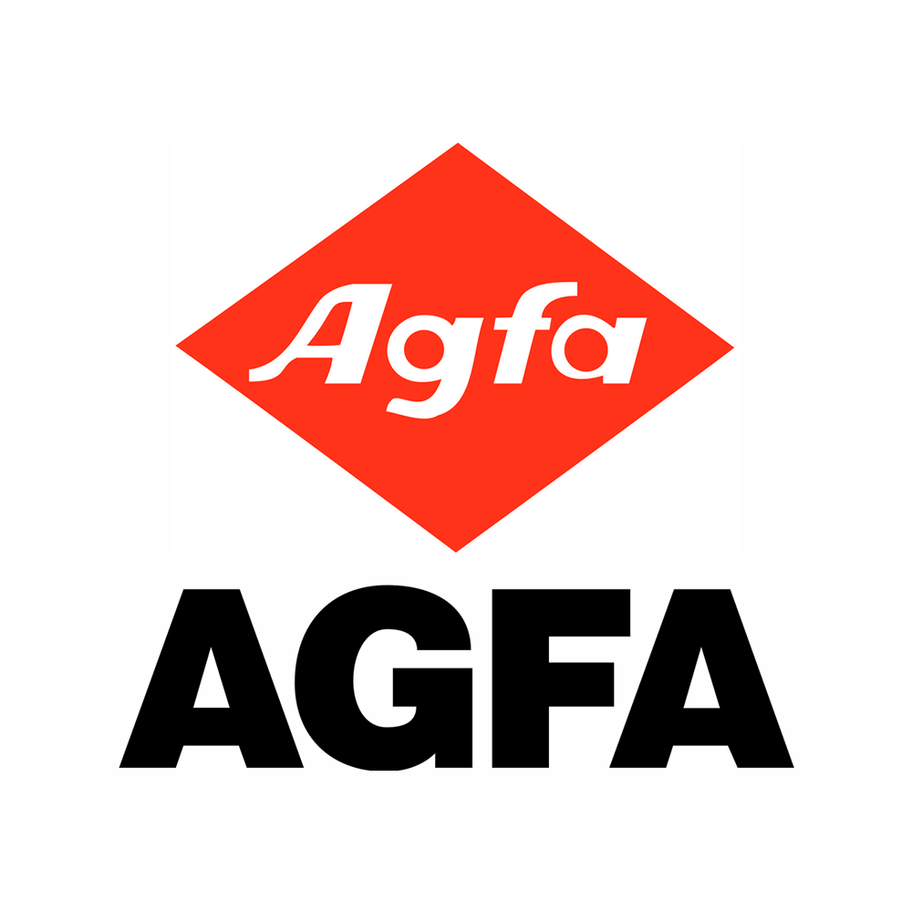

Hello, world! I'm a developer and a math enthusiast.
=> "Waterloo, ON"
> Deep.education
=> "University of Waterloo"
> Deep.major
=> "Statistics, BMath"
> Deep.expectedGraduation
=> "December 2021"
> Deep.interests
=> ["Code", "Robotics", "Statistics", "Finance", "Coffee", "Basketball"]
> Deep.workExperience.latest
=> Latest Work Experience
company: "LoyaltyOne INC."
role: "Software Developer Intern"
startDate: "September 2018"
endDate: "Present"
> Deep.resume
=> "deepdhillon.pdf"
> Deep.email
=> "deep@deepdhillon.ca"
Résumé
Education
 University
of Waterloo
2016 - 2021
University
of Waterloo
2016 - 2021
Major in Statistics,
BMath
Waterloo, ON
Relevant Coursework:
- Probability
- Introductory Financial Mathematics
- Linear Algebra
- Functional Programming
- Object-Oriented Programming
- Logic and Computation
Work Experience
LoyaltyOne
INC.
September 2018 - Present
Software Developer Intern
Waterloo, ON
Joined Air Miles accounts team and working on their website to incorporate marketing needs. The
work
is Full-Stack and using React, Redux, Scala and Java. Working on a chatbot to help with customer
experience.
ReactReduxScalaJavaDialog FlowGit
AGFA
Healthcare INC.
September 2017 - December 2017
Agile Software Developer Co-op
Waterloo, ON
Joined a team working on Medical imaging server called Impax. Design tools to load data onto the
server
and monitor its performance. Used Grafana and Influx DB to create a dashboard to show real time
data
logs for all the tests being performed on the server. Developed an anonymizer for patient and
medical
data to protect privacy.
JavaJUnitJBossGrafanaInflux DBSVN
Region
of Peel
July 2015 - August 2015
Data Analyst (Summer Student)
Brampton, ON
Joined the peel data centre team and provided administrative support and conducted research
for various projects including Agriculture trends in Peel region. Assisted with projects like
updating
Peel parks' parcel data set and used ArcGIS to create a map in order to assist road expansion
project.
Prepared excel files for data that needed to be uploaded on Peel's open data website.
ArcGISJavaExcelWeb
Extracurriculars
Waterloop
December 2017 - August 2018
Software Lead
Waterloo, ON
Responsible for overlooking the development of Software Systems for Waterloop's 2019 Hyperloop
Pod. Managing Agile Scrum board and developing Backend Servers to enable communication between the
pod and the controller.
AgileScrum
C/C++Go
NetworkingEmbedded
Waterloop
December 2017 - August 2018
Technical Director
Waterloo, ON
Leading a growing team of over 70 students in designing an all-new SpaceX Hyperloop Competition
2018
pod. Invited by SpaceX to submit a detailed design package, placing us in the top 47, selected from
hundreds worldwide. Facilitating and contributing to work team-wide, including a sophisticated and
reliable Hyperloop design expressed in a 131-page engineering design package and several in-house
embedded software libraries. Coordinating the establishment of nearly daily meetings across all
subteams, partnerships with businesses, universities, and government
(raising $100,000 and counting)
Financial ManagementMarketing
NetworkingProject Management
Waterloop
May 2017 - December 2017
Embedded Systems and Controls Lead
Waterloo, ON
Designed, implemented, and tested Waterloop's first-ever fully operational control system with a
team of 5+, including a WebSockets/UART telemetry pipeline, C++ state machine, and Qt dashboard.
Placed 15th out of over 150 teams in the 2017 SpaceX Hyperloop Competition.
C/C++Embedded
GoQt
Networking
Memory Management
Mentions & Posts